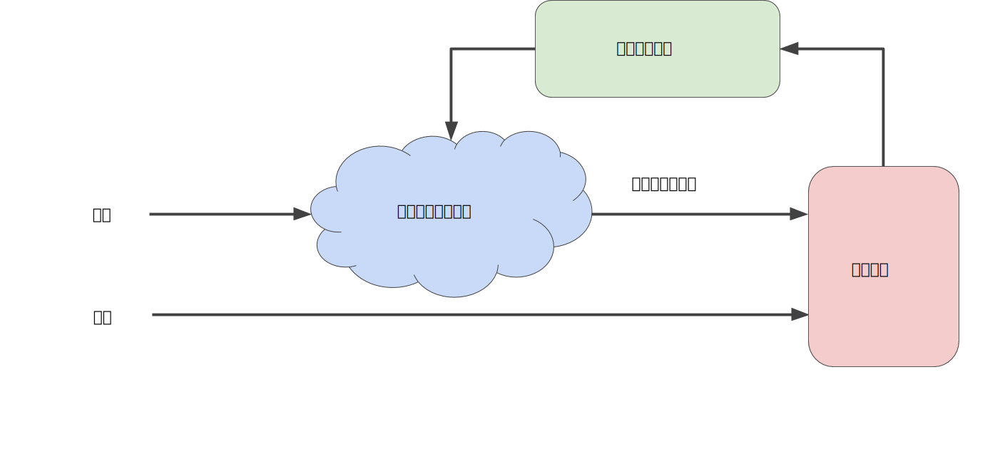

迭代方法
上一单元介绍了损失的概念。在本单元中，您将了解机器学习模型如何以迭代方式降低损失。
迭代学习可能会让您想到 Hot and Cold 这种寻找隐藏物品（如顶针）的儿童游戏。在我们的游戏中，“隐藏的物品”就是最佳模型。刚开始，您会胡乱猜测（“w1 的值为 0。”），等待系统告诉您损失是多少。然后，您再尝试另一种猜测（“w1 的值为 0.5。”），看看损失是多少。哎呀，这次更接近目标了。实际上，如果您以正确方式玩这个游戏，通常会越来越接近目标。这个游戏真正棘手的地方在于尽可能高效地找到最佳模型。
下图显示了机器学习算法用于训练模型的迭代试错过程：

图 1. 用于训练模型的迭代方法。
我们将在整个机器学习速成课程中使用相同的迭代方法详细说明各种复杂情况，尤其是处于暴风雨中的蓝云区域。迭代策略在机器学习中的应用非常普遍，这主要是因为它们可以很好地扩展到大型数据集。
“模型”部分将一个或多个特征作为输入，然后返回一个预测 (y') 作为输出。为了进行简化，不妨考虑一种采用一个特征并返回一个预测的模型：
y′=b+w1x1
我们应该为 b 和 w1 设置哪些初始值？对于线性回归问题，事实证明初始值并不重要。我们可以随机选择值，不过我们还是选择采用以下这些无关紧要的值：
- b = 0
- w1 = 0
假设第一个特征值是 10。将该特征值代入预测函数会得到以下结果：
y' = 0 + 0(10)
y' = 0
图中的“计算损失”部分是模型将要使用的损失函数。假设我们使用平方损失函数。损失函数将采用两个输入值：
- y'：模型对特征 x 的预测
- y：特征 x 对应的正确标签。
最后，我们来看图的“计算参数更新”部分。机器学习系统就是在此部分检查损失函数的值，并为 b和 w1 生成新值。现在，假设这个神秘的绿色框会产生新值，然后机器学习系统将根据所有标签重新评估所有特征，为损失函数生成一个新值，而该值又产生新的参数值。这种学习过程会持续迭代，直到该算法发现损失可能最低的模型参数。通常，您可以不断迭代，直到总体损失不再变化或至少变化极其缓慢为止。这时候，我们可以说该模型已收敛。